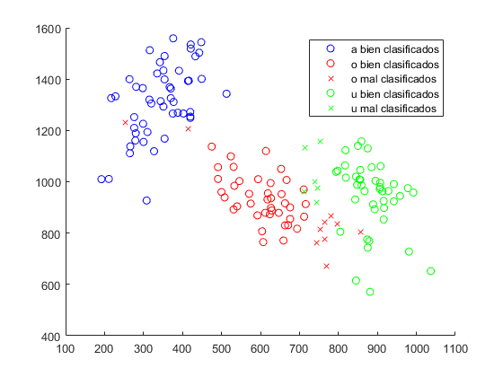
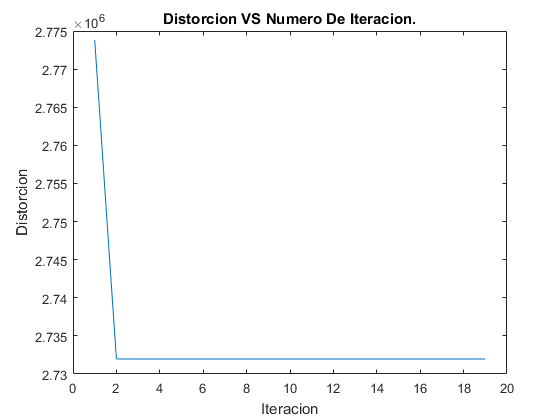

close all;
clear;
datos.a = importdata('c1.txt');
datos.o = importdata('c2.txt');
datos.u = importdata('c3.txt');
numero_de_elementos_para_inicializar = 1;
inicio = round(35 * rand());
formantes_a_iniciacion = datos.a(inicio:inicio+numero_de_elementos_para_inicializar,1:2);
formantes_o_iniciacion = datos.o(inicio:inicio+numero_de_elementos_para_inicializar,1:2);
formantes_u_iniciacion = datos.u(inicio:inicio+numero_de_elementos_para_inicializar,1:2);
formantes_a = datos.a(1:40,1:2);
formantes_o = datos.o(1:40,1:2);
formantes_u = datos.u(1:40,1:2);
formantes = [formantes_a; formantes_o; formantes_u];
mu_a_inicial = media(formantes_a_iniciacion);
mu_o_inicial = media(formantes_o_iniciacion);
mu_u_inicial = media(formantes_u_iniciacion);
j = 1;
mu_a = mu_a_inicial;
mu_o = mu_o_inicial;
mu_u = mu_u_inicial;
distorcion = [];
while(j < 20)
clasificados_a = [];
clasificados_o = [];
clasificados_u = [];
for i = 1:length(formantes)
diferencia_a = (formantes(i,:) - mu_a);
diferencia_o = (formantes(i,:) - mu_o);
diferencia_u = (formantes(i,:) - mu_u);
distancia_a = sqrt(diferencia_a(1)^2 + diferencia_a(2)^2);
distancia_o = sqrt(diferencia_o(1)^2 + diferencia_o(2)^2);
distancia_u = sqrt(diferencia_u(1)^2 + diferencia_u(2)^2);
if(min([distancia_a, distancia_o, distancia_u]) == distancia_a)
clasificados_a = [clasificados_a; formantes(i,:)];
end
if(min([distancia_a, distancia_o, distancia_u]) == distancia_o)
clasificados_o = [clasificados_o; formantes(i,:)];
end
if(min([distancia_a, distancia_o, distancia_u]) == distancia_u)
clasificados_u = [clasificados_u; formantes(i,:)];
end
end
mu_a = media(clasificados_a);
mu_o = media(clasificados_o);
mu_u = media(clasificados_u);
distorcion_a = 0;
for i = 1:length(clasificados_a)
diferencia = (clasificados_a(i,:) - mu_a);
norma = diferencia * diferencia';
distorcion_a = distorcion_a + norma;
end
distorcion_o = 0;
for i = 1:length(clasificados_o)
diferencia = (clasificados_o(i,:) - mu_o);
norma = diferencia * diferencia';
distorcion_o = distorcion_o + norma;
end
distorcion_u = 0;
for i = 1:length(clasificados_u)
diferencia = (clasificados_u(i,:) - mu_u);
norma = diferencia * diferencia';
distorcion_u = distorcion_u + norma;
end
distorcion = [distorcion, distorcion_a + distorcion_o + distorcion_u];
j = j + 1;
end
mu_a = media(clasificados_a);
mu_o = media(clasificados_o);
mu_u = media(clasificados_u);
sigma_a = sigma(clasificados_a, mu_a);
sigma_o = sigma(clasificados_o, mu_o);
sigma_u = sigma(clasificados_u, mu_u);
a_bien = [];
a_mal = [];
o_bien = [];
o_mal = [];
u_bien = [];
u_mal = [];
formantes_a = datos.a(1:50,1:2);
formantes_o = datos.o(1:50,1:2);
formantes_u = datos.u(1:50,1:2);
resultados.a = zeros(length(formantes_a), 1);
resultados.o = zeros(length(formantes_o), 1);
resultados.u = zeros(length(formantes_u), 1);
for i = 1:length(formantes_a)
g_a = (-1/2) * log(det(sigma_a)) + (-1/2) * (formantes_a(i,:) - mu_a)...
* inv(sigma_a) * (formantes_a(i,:) - mu_a)' + log(1/3);
g_o = (-1/2) * log(det(sigma_o)) + (-1/2) * (formantes_a(i,:) - mu_o)...
* inv(sigma_o) * (formantes_a(i,:) - mu_o)' + log(1/3);
g_u = (-1/2) * log(det(sigma_u)) + (-1/2) * (formantes_a(i,:) - mu_u)...
* inv(sigma_u) * (formantes_a(i,:) - mu_u)' + log(1/3);
if((g_a > g_o) && (g_a > g_u))
resultados.a(i) = 1;
a_bien = [a_bien; formantes_a(i,:)];
else
a_mal = [a_mal; formantes_a(i,:)];
end
end
for i = 1:length(formantes_o)
g_a = (-1/2) * log(det(sigma_a)) + (-1/2) * (formantes_o(i,:) - mu_a)...
* inv(sigma_a) * (formantes_o(i,:) - mu_a)' + log(1/3);
g_o = (-1/2) * log(det(sigma_o)) + (-1/2) * (formantes_o(i,:) - mu_o)...
* inv(sigma_o) * (formantes_o(i,:) - mu_o)' + log(1/3);
g_u = (-1/2) * log(det(sigma_u)) + (-1/2) * (formantes_o(i,:) - mu_u)...
* inv(sigma_u) * (formantes_o(i,:) - mu_u)' + log(1/3);
if((g_o > g_a) && (g_o > g_u))
resultados.o(i) = 1;
o_bien = [o_bien; formantes_o(i,:)];
else
o_mal = [o_mal; formantes_o(i,:)];
end
end
for i = 1:length(formantes_u)
g_a = (-1/2) * log(det(sigma_a)) + (-1/2) * (formantes_u(i,:) - mu_a)...
* inv(sigma_a) * (formantes_u(i,:) - mu_a)' + log(1/3);
g_o = (-1/2) * log(det(sigma_o)) + (-1/2) * (formantes_u(i,:) - mu_o)...
* inv(sigma_o) * (formantes_u(i,:) - mu_o)' + log(1/3);
g_u = (-1/2) * log(det(sigma_u)) + (-1/2) * (formantes_u(i,:) - mu_u)...
* inv(sigma_u) * (formantes_u(i,:) - mu_u)' + log(1/3);
if((g_u > g_a) && (g_u > g_o))
resultados.u(i) = 1;
u_bien = [u_bien; formantes_u(i,:)];
else
u_mal = [u_mal; formantes_u(i,:)];
end
end
figure(1);
hold on;
plot(a_bien(:,1), a_bien(:,2), 'bo');
plot(o_bien(:,1), o_bien(:,2), 'ro');
plot(o_mal(:,1), o_mal(:,2), 'rx');
plot(u_bien(:,1), u_bien(:,2), 'go');
plot(u_mal(:,1), u_mal(:,2), 'gx');
legend('a bien clasificados',...
'o bien clasificados', 'o mal clasificados',...
'u bien clasificados', 'u mal clasificados');
figure(2);
plot(distorcion);
title('Distorcion VS Numero De Iteracion.');
xlabel('Iteracion');
ylabel('Distorcion');
resultados = [resultados.a(40:50); resultados.o(40:50); resultados.u(40:50)];
ErrorRatio = 100 - mean(resultados) * 100
ErrorRatio =
9.0909
 